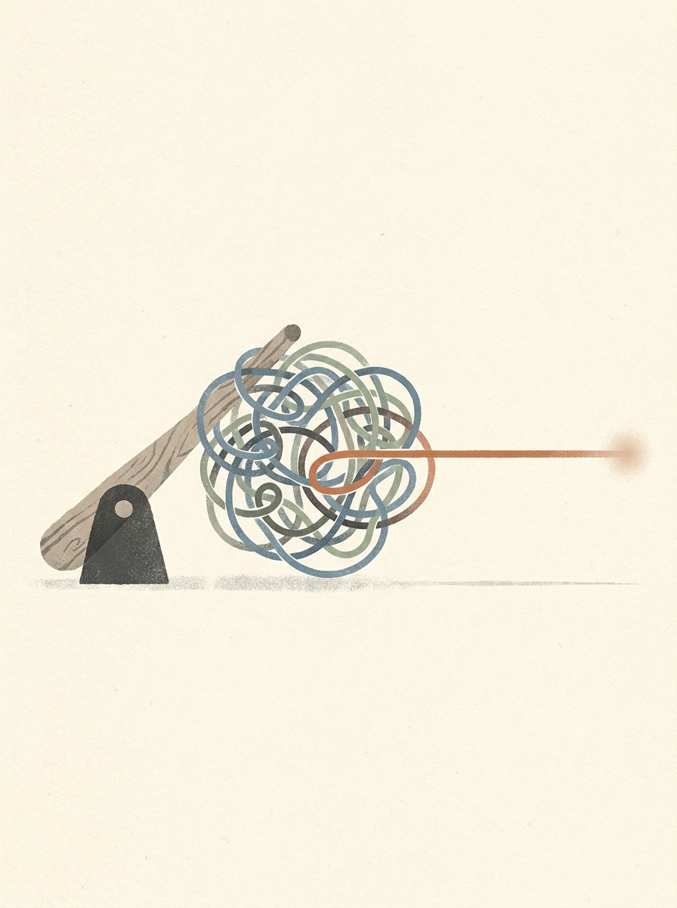
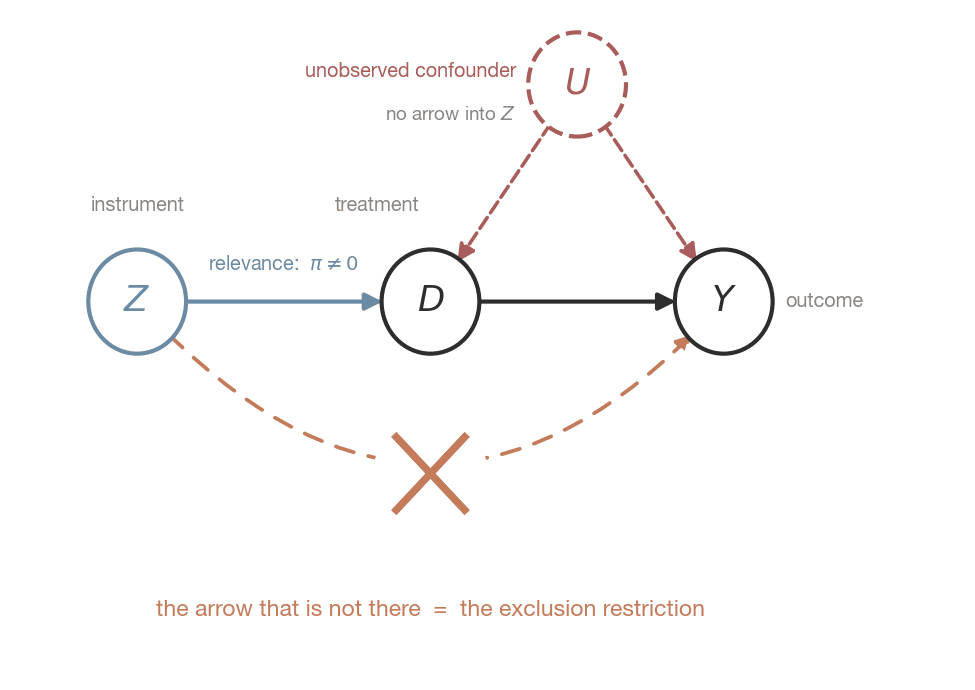
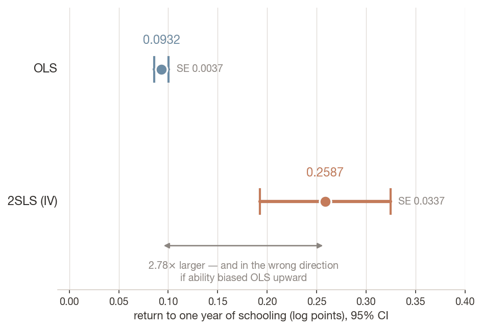
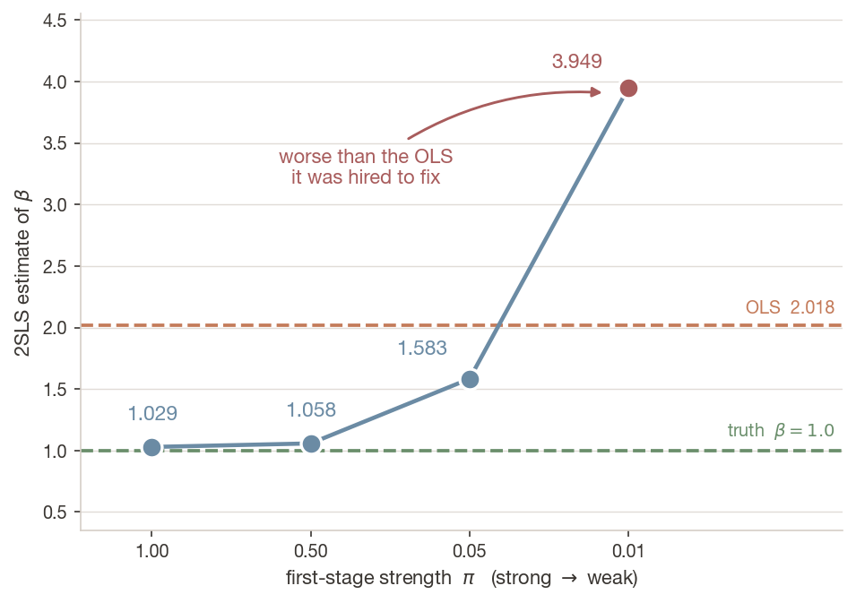
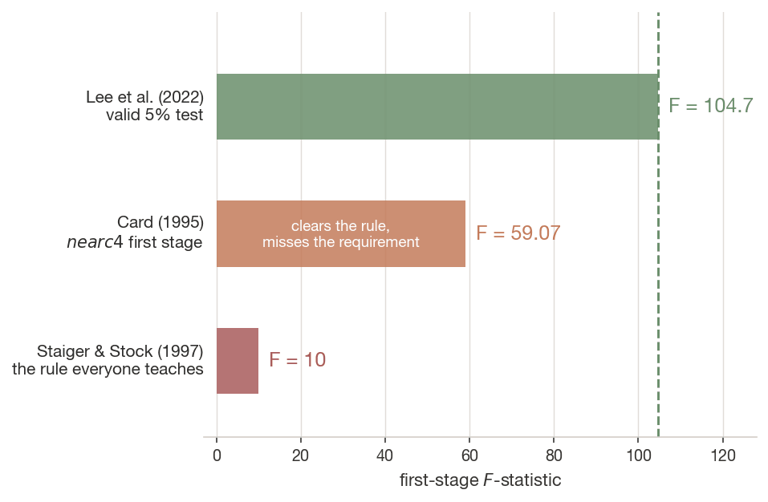

Identification without measuring a single confounder — and why that power is so hard to wield
Dr. Richeng Piao
Department of Economics Northeastern University

Learning Objectives
12.1
State relevance and exclusion, and say precisely which is testable and which is not
12.2
Estimate IV with correct standard errors, and compute the Wald estimator by hand
12.3
Diagnose weak instruments, and explain why 2SLS is biased toward OLS rather than toward zero
12.4
Say which population an IV estimate belongs to, and judge whether an exclusion restriction is defensible
Retrieval Practice
Quick Check 1 — Ch 10. A DAG's strongest claims are its absences. Name one arrow you had to argue was missing.
Quick Check 2 — Ch 11. TWFE under staggered adoption can return the wrong sign for a policy that helped everyone. What produced the negative weights?
Both answers converge on today: a linear specification imposes assumptions you never chose, with no warning.
The Rule Everyone Teaches
First-stage $F > 10$ and you may proceed. Staiger & Stock (1997). Twenty-five years, in the output of every statistics package you have ever run.
In 2022, four econometricians worked out what $F$ a nominal 5% $t$-test actually needs in order to have 5% size.
104.7
the $F$ you actually need
Across 61 AER papers, correctly adjusted standard errors were at least 49% larger at the 5% level for a quarter of the specifications — and 136% larger at the 1% level.
Now the Most Famous Instrument in Labour Economics
David Card used growing up near a four-year college as an instrument for years of schooling. It is in every textbook, including ours. You will replicate it today, and by hand in Lab 12.
59.07
its first-stage $F$
clears the rule • misses the requirement by nearly 2×
2.78×
2SLS ÷ OLS
correcting upward ability bias should push the estimate down
That direction should trouble you. Hold onto it — we come back to it in Section 2, with two explanations.
Your Card
The question on the next slide: in what year was Northeastern University founded?
Scan to open this slide on your phone. Your phone shows one short card. Odd and even NUIDs get different cards.
Follow your card, keep it to yourself, then answer on the next slide.
Interpretation: the second term is omitted-variable bias — and it does not shrink with $n$.
More data estimates the wrong number more precisely. Ch 6's data defect identity, again.
Picture It: More Data, Same Wrong Answer
A simulation built like Lab 12’s. The true effect of $D$ on $Y$ is $\beta = 1$, and the unobserved $u$ raises both. Here $\text{Cov}(D_i,\varepsilon_i) = 2$ and $\text{Var}(D_i) = 2$.
Each bar holds the middle 95% of 500 estimates. The bars shrink with $n$, around 2.0. None of the 1,500 gets below 1.58.
The Trick: Find a Lever
Suppose something pushes people into more schooling for a reason that has nothing to do with how much they would earn. Growing up within commuting distance of a college, say. It makes college cheaper, so more people go. It does not, by itself, make you a more productive worker.
Then the variation in schooling caused by proximity is clean, as good as randomly assigned. Throw away all the rest and use only that slice.
An instrument discards most of your data, keeping only the variation you can defend, and paying for that defensibility in precision.
Picture the Lever
Ability pushes schooling and earnings together, so their link mixes the two. Proximity gives schooling a second push, one that ability does not drive.
Green we can measure. Red has to be missing, and we can only argue it. The next slide names both.
Two Assumptions — and They Are Not Symmetric
Relevance
$\text{Cov}(Z_i, D_i) \neq 0$
Interpretation: the instrument actually moves the treatment.
TESTABLE — you observe both $Z_i$ and $D_i$.
Proximity: men who grew up near a college got 0.60 more years of schooling. You can measure that: first-stage $F = 59$.
Exclusion (validity)
$\text{Cov}(Z_i, \varepsilon_i) = 0$
Interpretation: $Z_i$ reaches $Y_i$ only through $D_i$.
UNTESTABLE IN PRINCIPLE — $\varepsilon_i$ is unobservable by construction.
Proximity: college towns are also cities with better-paid jobs. Did proximity raise earnings that way too? No regression can say.
No sample size, no diagnostic and no robustness table establishes exclusion. An IV paper is an argument about institutions with a regression attached.
The Estimand, in Two Lines
Take the covariance of the structural equation with $Z_i$:
Interpretation: the effect of the instrument on the outcome, divided by its effect on the treatment. That ratio is the entire method.
Example: Card's data. Men who grew up near a college have 0.60 more years of schooling and earn 15.5% more (holding experience fixed). If proximity touches earnings only through schooling:
The ratio is earnings per extra year of schooling, for the men proximity moved: Card's 2SLS estimate.
The Exclusion Restriction Is a Missing Arrow

$U$ confounds $D$ and $Y$ — that is the endogeneity. There is no arrow into $Z$, and no arrow from $Z$ to $Y$ except through $D$.
When someone attacks your instrument, they are drawing that arrow and asking you to rule it out.
For college proximity: better local labour markets? Better schools? Different industry mix? Every one is a candidate arrow, and each must be argued away or controlled for.
Common Misconception
“My instrument is randomly assigned, so the exclusion restriction holds.”
Randomisation gives you
Independence. The instrument is unrelated to everything at baseline. Free.
Exclusion is separate
And stronger. That it reaches the outcome through no channel except treatment. Never free.
A randomised email encouraging users to try a feature is perfectly independent — and it violates exclusion the moment it also reminds them their subscription exists. Randomisation gives you the first assumption. The second one you still have to argue, and it is the one that usually fails.
Poll: What Did the $F$ Actually Check?
A colleague says: “I ran the first-stage regression, $F = 42$, so the instrument checks out.”
Which assumption have they actually checked?
A) Both relevance and exclusion
B) Relevance only — exclusion is untestable
C) Exclusion only — relevance is untestable
D) Neither — $F$-statistics say nothing about instruments
Answer: B — Relevance Only
The first stage involves only $Z_i$ and $D_i$ — both observed. Exclusion is a statement about $\varepsilon_i$, which is unobservable by construction. There is no regression that can check it.
Why D is tempting but wrong: after the 104.7 hook it feels like the $F$ is worthless. It is not — the $F$ is the relevance test. The problem is the threshold everyone applies to it, not the statistic.
Discussion: Attack the Instrument
Card's instrument: growing up within commuting distance of a four-year college.
You are the referee. Your job is to draw the arrow that is not supposed to be there.
Prompt A
Name one path from proximity to earnings that does not run through schooling.
Prompt B
For that path — can you control for it, bound it, or only argue about it?
1 min think → 2 min pairs → 1 min share
2 • From Wald to Two-Stage Least Squares
Four sample means, and then everything else.
The Wald Estimator: Four Sample Means
What it is for: the IV estimate of $\beta$ when the instrument is binary, $Z = 1$ or $0$. In Card: $Z$ = grew up near a four-year college, $D$ = years of schooling, $Y$ = log wage.
Interpretation: the difference in average outcomes between instrument groups, divided by the difference in average treatment. Four numbers. No matrix algebra.
Card’s 3,010 men
mean log wage $\bar Y$
mean schooling $\bar D$
Near a college, $Z=1$ (2,053)
6.3114
13.527
Not near, $Z=0$ (957)
6.1555
12.698
Difference
0.1559 reduced form, $Z \to Y$
0.8290 first stage, $Z \to D$
Wald = RF / FS 0.1559 ÷ 0.8290 0.1881
And IV2SLS with no covariates returns 0.1881, exactly. 2SLS is the Wald estimator generalised.
Your Room’s Four Means
Practice numbers: 20 made-up students
Looked it up (share)
Miss, years from 1898
n
Odd · nudged (Z = 1)
—
—
—
Even · not nudged (Z = 0)
—
—
—
Difference
—
—
Who moved? Even phones that looked it up anyway: — (always-takers) · odd phones that did not: — (never-takers) · the rest, —, are the compliers
Wald = reduced form ÷ first stage = — ÷ — = — years
What looking it up did to the miss, for the students the nudge moved.
Is the lever strong? First-stage F = —
Section 4 asks how big this has to be. A small first stage makes the ratio explode.
2SLS Mechanics
FIRST STAGE — project the endogenous variable onto the instrument and controls
Interpretation: $\hat D_i$ holds only the variation the instrument explains — the part that is, by assumption, unrelated to $\varepsilon_i$. Everything else has been thrown away.
That discarding is why IV estimates are so much less precise than OLS — a cost the Card replication makes vivid.
Never Hand-Roll the Second Stage
Running those two regressions yourself gives the right coefficient and the wrong standard error. Worth doing once, deliberately — it is a bug that survives code review.
Identical coefficients. The manual standard error is 16% too small (the right one is 20% larger), and $t$ inflated from 7.61 to 9.11.
Mechanism. The hand-rolled stage computes residuals as $Y_i - \hat D_i\hat\beta$, using the fitted treatment. The correct structural residual uses the actual one, $Y_i - D_i\hat\beta$. The two differ by $\hat\beta$ times the first-stage residual, so the error variance is wrong and every standard error inherits it. The direction depends on the data: on these two controls it is too small; with Lab 12’s five controls it is slightly too large (0.0504 against 0.0492).
Here it turns 7.6 into 9.1 and changes nothing. In a marginal case it produces a false discovery.
Poll: Same Coefficient, Different SE
Two-stage-by-hand and IV2SLS return exactly the same coefficient but different standard errors.
Why?
A) linearmodels uses a different estimator
B) The manual version uses $\hat D_i$ in its residuals; the structural residual needs $D_i$
C) Rounding in the first-stage fitted values
D) The manual version forgot the constant
Answer: B — The Wrong Residual
The manual residuals use $\hat D_i$ where the structural residual needs $D_i$. They differ by $\hat\beta$ times the first-stage residual, so the estimated error variance is wrong and every standard error inherits it: in Card’s two-control data it comes out too tight.
Why A is tempting but wrong: the two estimators are algebraically identical for the point estimate — that is why the coefficients match to four decimals. The divergence is entirely in the variance formula.
Replicating Card (1995)
n: 3,010 young men
Source: NLS of Young Men, 1966
$Z$:nearc4
Loaded via:wooldridge

1. The precision cost. Robust SE 0.0037 → 0.0337. Nine times wider. That is the price of discarding all schooling variation except the sliver proximity explains.
2. The direction. OLS says 9.3% per year. 2SLS says 25.9%. If ability biases OLS upward, the correction should push it down. It nearly tripled.
IV Above OLS: Two Stories, and a Warning Sign
The puzzle: Card’s 2SLS says 25.9% a year, OLS 9.3%. If ability were the only bias, OLS would be too high and IV would come in below it.
Story 1: LATE. Proximity moved men held back by the cost of college. Their return may really be higher than the average man’s. (Section 3.)
Story 2: measurement error. Misreported schooling pulls OLS toward zero, so OLS is too low. IV corrects that too.
a sketch of the pattern, not the study’s data
Lal, Lockhart, Xu & Zu (2024) replicated 67 political-science IV studies. 2SLS came out far above OLS in most, and the ratio was larger where the instrument was weaker (instruments not from experiments).
Under robust inference, about 19–30% of the published 2SLS estimates are underpowered.
Neither story gives the gap a reason to grow as the instrument weakens. So what does? That is the next vote.
Poll: How Should You Read That Pattern?
Across a large replication literature, IV estimates run far above OLS — and the gap widens as instruments get weaker.
The best reading is:
A) IV is correcting a large downward bias in OLS
B) A diagnostic warning: weak first stages amplify small exclusion violations
C) Evidence that OLS should be abandoned for causal work
D) Sampling noise — with enough studies anything correlates
Answer: B — Read It as a Warning
A correction that tracks instrument strength is an artefact of dividing by a small, noisy denominator — any tiny breach of exclusion gets divided by a near-zero first stage and blown up.
Why A is tempting but wrong: it was the discipline's own reading for decades, and it is not refutable from a single study. What refutes it is the correlation with strength — bias correction has no reason to scale with how weak your lever is.
3 • Whose Effect Did You Estimate?
A number for a group you cannot name, cannot count, and did not choose.
Four Types (Imbens & Angrist 1994)
Everyone has two answers: what they would do without the push, $D_i(0)$, and with it, $D_i(1)$. In our room, the push was the odd-NUID nudge to look the year up.
$D_i(0) = 0$ no look-up without the nudge
$D_i(0) = 1$ looks it up anyway
$D_i(1) = 1$ with the nudge
COMPLIER: moves when pushed looks it up only when nudged
Always-taker: treated anyway looks it up either way
$D_i(1) = 0$ with the nudge
Never-taker: never treated never looks it up
Defier: assumed away looks it up only when not nudged
example shares; your room’s are on 16.2
Always- and never-takers do the same in both rows, so they cancel. IV recovers the average effect for compliers only: the Local Average Treatment Effect. “Local” means the people this instrument moves, not a region.
You Cannot Identify Who the Compliers Are
Compliance is defined by a counterfactual — what someone would do under both values of the instrument. You observe each person under one.
What you can do
Estimate the complier share — it is the first stage. With more work, describe their characteristics.
What you can never do
Produce a list. Not with more data, not with a better model. It is not a sample-size problem.
So a different instrument for the same treatment estimates a different parameter. Card's proximity moves people for whom distance was the binding constraint — plausibly poorer, liquidity-constrained, plausibly higher return. Angrist & Krueger's quarter-of-birth moves people who wanted to leave at the minimum legal age — a very different group with plausibly a different return.
Two valid instruments, two different numbers, and neither is wrong. They are estimates of different estimands.
Monotonicity: No Defiers
$D_i(1) \geq D_i(0) \quad \text{for all } i$
Interpretation: the instrument pushes everyone in the same direction, or not at all. This is a statement about every individual, not about an average.
Monotonicity is what makes the denominator interpretable. Without it the first stage is a net movement — some people pushed in, others pushed out — and the ratio no longer corresponds to any average effect at all.
Where this matters: judge-leniency designs. Cases are randomly assigned to decision-makers with different approval rates. Strict monotonicity is hard to believe when judges weigh evidence differently — a lenient judge may deny a case a strict judge would grant. Frandsen, Lefgren & Leslie (2023) relax it to average monotonicity and test it jointly with exclusion. When that happens the 2SLS estimate loses its causal interpretation entirely.
The Saturation Problem — Chapter 11, Second Sighting
Standard practice reads 2SLS-with-covariates as a positively weighted average of covariate-specific LATEs. Blandhol, Bonney, Mogstad & Torgovitsky (2022) proved this is false unless the specification is non-parametrically saturated — the instrument interacted with every combination of covariate values.
Include covariates linearly, as essentially every applied paper does, and 2SLS assigns negative weights to the treatment effects of always-takers and never-takers. The estimate can come back negative when the treatment strictly helped every single person in the population.
You have seen this before. TWFE under staggered adoption; 2SLS with linear covariates. Same pathology, different estimator: a linear specification imposing a weighting scheme the researcher never chose and cannot see in the output. Blandhol et al. is to IV what Goodman-Bacon is to DiD.
Remedy: saturate — estimate a LATE within each covariate cell and aggregate with weights you choose and report. Expensive in degrees of freedom. The alternative is an estimate whose sign you cannot vouch for.
Discussion: The Charter Cap
Boston's charter lotteries. Oversubscribed urban charters were legally required to admit by random lottery — a randomised instrument embedded in real policy. A year of attendance raised math achievement by roughly 0.4 SD and ELA by about 0.2 SD. The estimates entered Massachusetts' debate over lifting the statewide cap.
Prompt A
Who are the compliers here? Name them in one sentence.
Prompt B
Does lifting a statewide cap scale the treatment for the compliers, or extend it to someone else?
1 min think → 2 min pairs → 1 min share
Think Like an Economist
A product manager sees your significant IV estimate and asks whether rolling the treatment out to everyone will deliver that lift.
The answer is no — and the useful version explains why.
Compliers The slice a nudge could tip. Your estimate is about them.
Always-takers Already had the treatment. The rollout does nothing for them.
Never-takers Will not adopt whatever you do.
The professional answer: state the estimate, describe the compliers concretely, and say what would have to be true about everyone else for the number to generalise.
4 • The Weak Instrument Crisis
Where the field spent twenty-five years being wrong about the assumption it could test.
The Mechanism Is the Ratio
The problem is not that a weak instrument gives an imprecise estimate. It does — but that alone would be harmless: wide intervals tell you that you have learned little.
The problem is that its standard errors suggest more confidence than you have — and as the instrument gets very weak, the estimate itself slides toward OLS.
IV divides by the first stage. As the first stage approaches zero you are dividing by something small and noisy. Any chance correlation between instrument and error in your sample, and any small breach of exclusion, gets divided by that small number and blown up.
In the limit of a useless instrument, 2SLS converges on the OLS estimate you were trying to escape.
Instruments Made of Pure Noise
Bound, Jaeger & Baker (1995) took Angrist & Krueger's celebrated quarter-of-birth study — hundreds of thousands of observations, a very clean natural experiment — and replaced the real instruments with randomly generated ones.
They reproduced results resembling the published estimates.
The instruments contained essentially no information. The procedure still produced a plausible-looking number, with a standard error, in a table.
This is why the field started caring: the output looked the same when the instruments contained nothing.
Build It: You Only Know Because You Simulated
True effect $\beta = 1.0$. A confounder $U$ raises both treatment and outcome, so OLS is biased upward — toward 2.0 when the instrument is weak. Watch the OLS column drift down as $\pi$ rises: a stronger instrument explains more of $D$, so $U$'s share of its variance falls and the OLS bias shrinks with it. Measured, $n = 2{,}000$ — these are the numbers you will reproduce in Lab 12.
$\pi$ (first stage)
OLS
2SLS
SE(2SLS)
Result
1.00
1.698
1.029
0.052
recovers the truth
0.50
1.915
1.058
—
recovers the truth
0.05
2.017
1.583
0.851
$t = 1.86$, $p = 0.063$
0.01
2.018
3.949
7.620
worse than the OLS it replaced
At a strong first stage 2SLS comes out at 1.03 and 1.06, within one draw's sampling noise of the true 1.0. The 3.949 is one draw. Over 500 draws of the same simulation the median 2SLS at $\pi = 0.01$ is 2.038 against a median OLS of 1.998 — weak 2SLS centres on the bias it was meant to remove, not on the truth, and it scatters widely around it: the middle 80% of draws runs from −2.06 to 5.54. The mean is undefined: just-identified 2SLS has no finite moments.
Your Lab, Diagnosis 1: One Sample at Each Strength
Lab 12’s own cell, the table on the slide above: a true effect of 1.0, a confounder that biases OLS up, and pi setting how hard the instrument pushes.
A Weak Instrument Is Worse Than No Instrument

OLS was biased by +1.0. In this one draw, the IV estimate meant to fix it is off by +2.9; across 500 draws its median sits on the OLS bias.
A weak instrument does more than correct less: it gives a different, larger and harder-to-read error, reported in the language of causal identification.
No instrument leaves you with an OLS bias you can at least reason about. A weak one gives you a different bias you cannot.
The Confident Wrong Answer
One draw is not evidence. Across 500 draws of the same DGP:
$\pi = 0.05$
31.4% of studies reject $\beta = 0$ at the 5% level.
Of those significant results, 75.2% are off the truth by more than 0.5.
$\pi = 0.01$
21.0% reject $\beta = 0$.
Of those, 98.1% are wrong by more than 0.5.
You do not run 500 studies. You run one. “My second stage was significant” is therefore not a defence — under a weak instrument, significance is evidence of a lucky draw from a distribution with no finite moments, not evidence of identification.
Poll: What Does That Tell You?
At $\pi = 0.05$, about 31% of draws are statistically significant — and 75% of those are off the true effect by more than 0.5.
The right conclusion is:
A) Weak instruments produce obviously noisy, easily spotted results
B) Significance under a weak instrument is close to worthless as evidence
C) Increase the sample size and the problem resolves
D) Use a one-sided test to recover the lost power
Answer: B — Confident, Not Noisy
A weak instrument produces a confident wrong answer, not a visibly noisy one. That is exactly why these results survive peer review — nothing in the output looks broken.
Why C is tempting but wrong: weak-instrument bias is governed by the concentration parameter, roughly $n$ times the first stage’s signal-to-noise. More data raises it only as fast as $n$, so a lever that barely moves anything needs an enormous sample to escape, and one that moves nothing never does.
Stop Using $F > 10$

Lee, McCrary, Moreira & Porter (2022): a valid 5% $t$-test in the just-identified model needs $F > 104.7$.
Their $tF$ procedure gives an adjusted standard error as a smooth function of the first-stage $F$. Keep $F$ near 10 and you must inflate the critical value from 1.96 to about 3.43 to preserve valid inference.
And use an effective $F$. The conventional first-stage $F$ assumes homoskedastic, unclustered errors. Real data have neither. Montiel Olea & Pflueger (2013); see Andrews, Stock & Sun (2019).
Common Misconception
“linearmodels gives me the effective $F$ in first_stage.”
It does not. That property reports R², partial R², Shea's R², and a partial $F$ — and under a robust covariance that partial $F$ is reported on a chi-squared distribution. There is no Montiel Olea–Pflueger effective $F$ in that table.
Compute it separately, or use a package that implements it (ivDiag in R).
Believing you have checked something you have not is a worse position than knowing you have not checked it.
Report a Weak-Instrument-Robust Confidence Set
Anderson–Rubin sidesteps the whole problem by never dividing by the first stage. Under $H_0: \beta = \beta_0$, the restricted residual $Y_i - \beta_0 D_i$ must be uncorrelated with $Z_i$. Test that directly, sweep a grid of candidate $\beta_0$, and keep every value you cannot reject.
At Card's $F = 59$ the two are close — the AR set is shifted up and about 4% wider. That is the expected picture for a moderately strong instrument, and it is reassuring here.
The value of AR is what it does when the instrument is really weak: the set becomes unbounded, or empty — the method correctly reporting that the data do not identify $\beta$.
A Wald interval never tells you that. An AR set does.
5 • When Exclusion Is Only Nearly True
The third instance of one idea.
Plausibly Exogenous
Every serious objection to an IV paper is an argument that exclusion fails a little. Not catastrophically — a little. The conventional response is to insist it holds exactly: a binary claim about an untestable assumption.
Conley, Hansen & Rossi (2012) formalise the mature alternative. Allow the instrument a direct effect:
Interpretation: $\gamma$ is exactly the arrow the DAG said was absent. Standard IV asserts $\gamma = 0$.
Instead of asserting it, place $\gamma$ in a plausible range and trace $\hat\beta$ across it — the union of confidence intervals, or the local-to-zero approximation. The output is a set, and the reported claim becomes conditional and defensible:
“Our conclusion survives any direct effect of the instrument on the outcome smaller than $\bar\gamma$.”
Your Lab, Diagnosis 3: Sweeping the Missing Arrow
Plausibly Exogenous as Lab 12 runs it: Diagnosis 1’s simulation with a strong instrument (pi = 0.5), 5,000 people, and a direct effect gamma of the instrument on the outcome.
The Portable Pattern
Chapter
The untestable assumption
The bound you report instead
10
No unmeasured confounding
E-value
11
Parallel trends
Honest DiD breakdown point
12
Exclusion restriction
Plausibly exogenous $\bar\gamma$
When an assumption cannot be tested, do not assert it — bound it, and report the breakdown value.
That sentence is the most portable thing in this module, and it is worth more than any individual estimator in it.
Three Modern Design Families, Three Failure Modes
Design
What is random
Its specific failure mode
Judge / examiner leniency
Case assignment to decision-makers of differing strictness
Monotonicity (Frandsen et al. 2023); plus many-instrument bias when each judge is a dummy
Shift-share (Bartik)
Either the shocks (Borusyak et al.) or the shares (Goldsmith-Pinkham et al.)
Not knowing which framework you are invoking — the referee's question is only answerable if you have chosen
Encouragement
The nudge you send. Independence is guaranteed — you control it
Exclusion — an email that also reminds the user their subscription exists
Encouragement designs are the industry default and the interview favourite. When a product must ship to everyone you cannot withhold it — so you randomise the nudge. The estimand is the LATE for users the nudge tipped, which is, usefully, exactly the population a marketing budget should be sized against: always-takers would have adopted anyway.
Discussion: Break Your Own Instrument
Before you defend an instrument, try to break it.
Use your own project if you have one, or Card's proximity if you do not.
Prompt A
Write down the three most plausible direct paths from your instrument to your outcome that do not pass through the treatment.
Prompt B
For each: can you control it, bound it, or only argue about it?
1 min think → 2 min pairs
Key Takeaways
An instrument discards data. Identification without measuring a confounder, achieved by keeping only the slice a lever explains — which is why IV costs so much precision.
One assumption is testable, one is not. Randomisation delivers independence, never exclusion. Exclusion is an argument about institutions with a regression attached.
IV estimates the LATE. Compliers only — a group you cannot enumerate. Different valid instruments recover different parameters, and neither is wrong.
$F > 10$ is wrong by an order of magnitude. A valid 5% $t$-test needs $F > 104.7$; at $\pi = 0.01$ our simulation returned 3.949 against a truth of 1.0 and an OLS estimate of 2.018.
With covariates, 2SLS can carry negative weights unless the model is saturated — Chapter 11's pathology in a second estimator (reading: The Saturation Problem). And: when an assumption cannot be tested, bound it and report the breakdown value.
End-of-Class Check
One question before you leave.
A lottery randomly assigns families a school voucher. Not every winner uses it, so you use lottery outcome as an instrument for attending a private school. The first stage is strong. A referee asks you to defend the exclusion restriction, and your co-author replies that the lottery was randomized, so exclusion is guaranteed.
Is that a defence?
Any answer earns full credit — attendance marks that you were here, not that you were right.
Attendance is the check-in on your phone — enter your NUID once, then vote in today’s polls. No Canvas quiz and no access code.
5 min
Next: Lab 12, and Chapter 13
Lab 12 — lab-ch12-diagnostic.ipynb. Three analyses that are wrong before you read them: the instrument that barely moves anything, the estimate that belongs to someone else, and exclusion that is only nearly true. You run src/iv_tools.py — a given module that will not report a second stage without the first-stage diagnostics beside it.
Ch 13 — RD
The fourth identification strategy, and arguably the most credible. Fuzzy RD literally is IV, with distance-to-cutoff as the instrument.
Ch 24 — Double ML
Belloni et al. (2012) — a penalised first stage that preserves valid inference — is DML's direct ancestor. Where this course's econometrics and ML halves converge.
The rule to carry out of this room: never report a second stage without the first-stage diagnostics beside it.